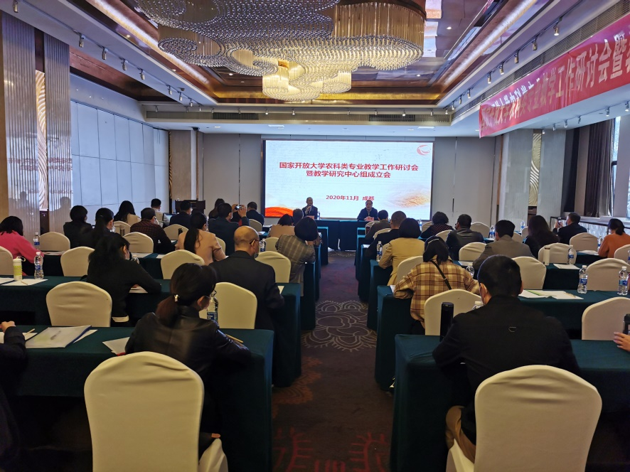
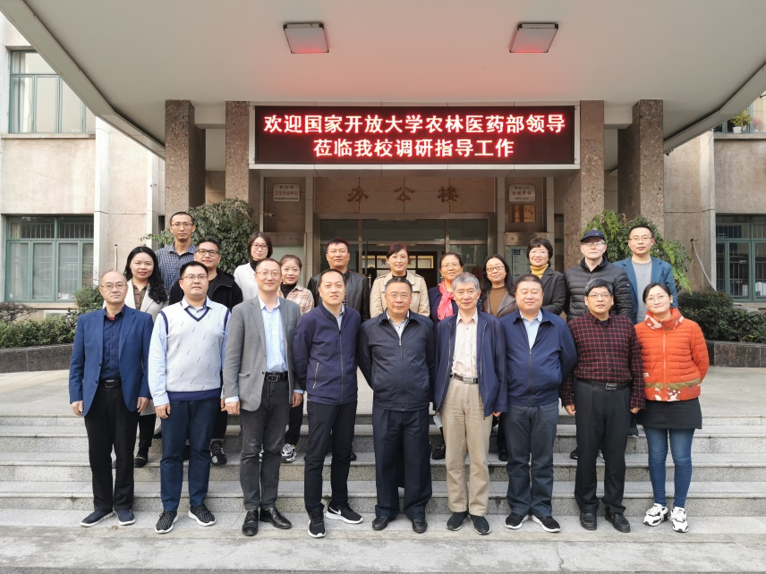
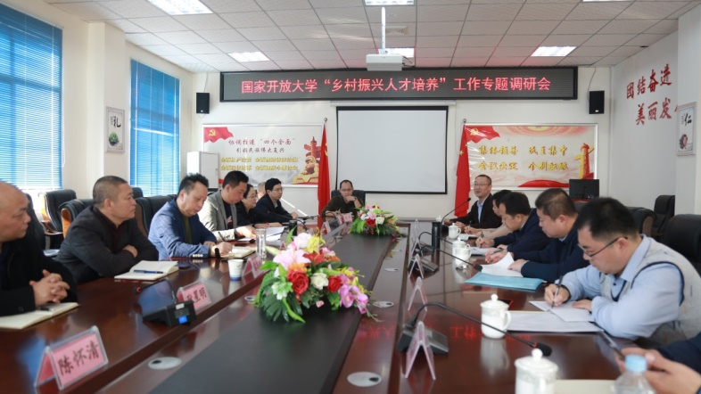
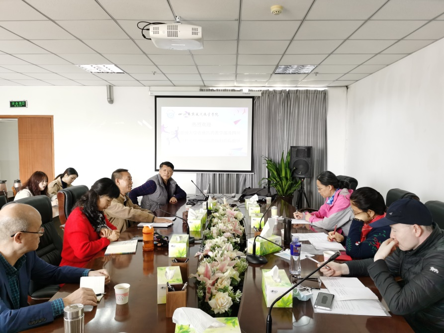
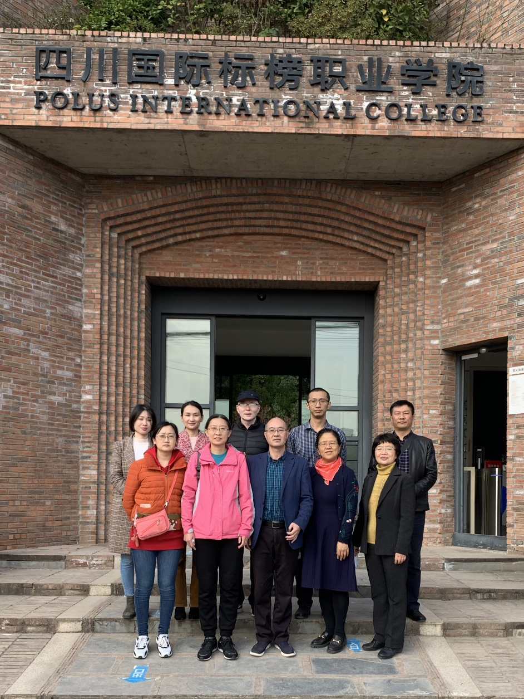

国家开放大学农医教学部2020年教学工作研讨会暨教学研究中心组成立大会于11月17日至21日在成都召开，分农科、医科两个大类开展会议研讨和实地调研，来自全国省级电大的领导、教师共计120余人参加会议。

图1：会议现场
江苏广播电视大学农林卫生学院、乡村振兴学院院长杨志超向大会致辞，并简要介绍学校转型发展期的战略规划以及学院在专业建设、队伍建设、产教融合等方面的总体情况。会议期间，农林卫生学院陈文教授、赵永田副教授分别在医科组、农科组会议上做专题交流发言。同时，学院吕晨钟教授、陈文教授分别受聘国家开放大学农村区域发展本科、公共事业管理（卫生事业管理方向）本科研究中心组组长，龚静副教授、赵永田副教授分别加入国家开放大学护理本科研究中心组和园艺本科研究中心组。
为进一步了解江苏广播电视大学农医类专业建设与人才培养工作，18日下午，国家开放大学农医教学部以及湖北、河北、江西分部领导一行10人莅临学校调研指导，副校长刘纯龙、招生学生建设处处长陈松、教务处副处长张世凤以及农林卫生学院、乡村振兴学院全体教职工参加调研座谈。双方就农医类专业建设规划、教学计划制定、特色课程开发、乡村振兴人才培养项目拓展以及教学服务管理中存在的突出问题开展了针对性研讨。

图2：国家开放大学农林医药教学部领导莅临我校调研
19日，杨志超院长、吕晨钟教授陪同国家开放大学农医教学部农科组赴乐山广播电视大学开展乡村振兴人才培养工作调研。调研组在乐山广播电视大学召开专项座谈会，乐山电大校长余向华、副校长李永志结合乐山电大服务乡村振兴，开展农村带头人学历提升项目的工作进行详细汇报。国家开放大学李广德副部长、付晋峰院长等领导与乐山电大教职工围绕如何因地制宜提高乡村振兴人才培养质量、优化培养过程等系列问题进行了交流。座谈会后，调研组一行在余向华校长陪同下前往乐山电大沙湾分校教学实践基地——太平镇罗一村“研学游”实践教学基地进行实地考察，并对乐山沙湾区实施的“乡村振兴、头雁提能人才培养”工作进行调研指导。
同日，杨大明副院长、陈文教授等陪同国家开放大学农医教学部医药学院唐已婷院长一行赴江苏华新现代职业学院和国际标榜职业学院进行医护类专业教学调研，重点了解高职护理专业人才培养标准及课程设置的问题。华新现代职业学院刘斌副院长、国际标榜职业学院康复学院护理系主任唐勤陪同调研。

图3：国家开放大学农林医药教学部农科组赴乐山广播电视大学开展调研

图4：国家开放大学农林医药教学部医科组赴华新现代职业学院开展调研

图5:国家开放大学农林医药教学部医科组赴国际标榜职业学院开展调研
李广德副部长等农医教学部领导在调研过程中详细了解了江苏广播电视大学农林卫生学院、乡村振兴学院的相关工作，充分肯定了学院全体教职工的辛勤努力及所取得的成绩，高度认同学院下一步的工作规划与举措，希望双方在农医类人才培养的领域内全面深化合作，密切交流，共同提高。通过参加此次教学工作会议与调研工作，农林卫生学院、乡村振兴学院在专业规划、课程设置、人才培养、教学管理等诸多方面得到了国家开放大学农医教学部的全面指导，进一步明确了国家开放大学农科、医科专业人才培养的总体要求，为更好地服务国家乡村振兴人才培养和健康中国战略发展拓展了工作思路，增强了办学信心。（农林卫生学院、乡村振兴学院报道）